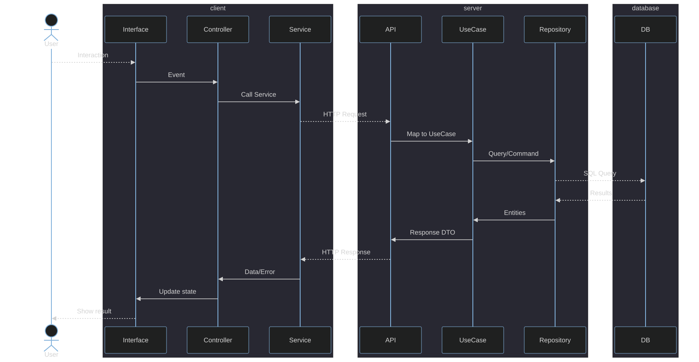

Modular Architecture for Comprehensive Software Solutions
MACSS is a software architecture methodology designed for AI-assisted development. It defines a layered architecture with single-responsibility components and a monorepo structure that gives both the developer and the AI agent complete, unambiguous context over the entire system. The result: a developer with an AI copilot operates as a true full-stack team.
AI agents perform best when they can reason about a codebase with clear boundaries, predictable structure, and explicit contracts. MACSS provides exactly that:
Every request flows through layers with a single responsibility. The architecture enforces separation: UI never touches the database, business logic never knows about HTTP, persistence never formats responses.

InterfacePresents information and captures user interactions. UI or CLI.ControllerManages application state. Orchestrates calls between interface and services.ServiceHTTP communication layer between client and server. Abstracts transport.APIServer that exposes endpoints and routes requests to use cases.UseCaseBusiness logic. Typed Input/Output, validate() + execute() lifecycle.RepositoryData access. Executes SQL queries and commands.DBPersistence. Managed as Database as Code — DDL scripts, no ORMs.Server-side SDK. Implements the UseCase lifecycle, CQRS routing, OpenAPI generation, health and metrics.
modular_api →Client-side SDKs. Transport-agnostic REST and GraphQL clients with the Result pattern, shipped inside modular_api. No raw HTTP in the presentation layer.
modular_api clients →Every MACSS project is a single repository with a canonical layout. The AI agent — and the developer — find everything in a predictable location.
project/ ├── code/ │ ├── db/ → SQL schemas, DDL scripts, repositories │ ├── api/ → use cases, endpoints, server │ ├── app/ → services, controllers, views │ └── infra/ → CI, containers, environment config ├── docs/ │ ├── adr/ → architecture decision records │ ├── architecture.md │ └── roadmap.md └── README.md
Within code/, business logic is organized as modules — vertical slices that group related use cases from the same domain:
code/api/modules/ ├── clients/ → create, list, get, update, delete ├── billing/ → invoice, payment, refund └── inventory/ → stock, transfer, adjustment
Each module has explicit boundaries and declared dependencies. When a module needs to scale independently, it can be extracted as a separate service without modifying its internal structure.
The macss CLI scaffolds the standard project structure from templates.
irm https://macss.dev/install.ps1 | iex
Installs to %LOCALAPPDATA%\macss\, adds macss and alias ma to PATH.
curl -fsSL https://macss.dev/install.sh | bash
Installs to ~/.macss/, adds macss and alias ma to PATH.
macss create <path>
Scaffold a new project with code/{db,api,app,infra} and documentation templates.
macss doctor
Verify installation integrity.
macss upgrade
Download and apply the latest release.
macss version
Print the installed version.